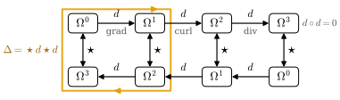
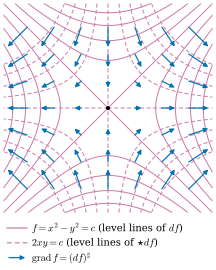

35.2 The Exterior Derivative
Goals
- 함수의 differential \(df\)를 directional derivative로 정의하고, inner product가 필요한 gradient \(\grad f = (df)^\sharp\)과 구분할 수 있다.
- exterior derivative \(d\)가 세 성질(함수에서 \(df\), graded product rule, \(d\circ d = 0\))로 유일하게 정해지고 좌표 공식 \(d(\sum_I\alpha_I\,dx^I) = \sum_I d\alpha_I\wedge dx^I\)로 주어지며, 이 공식이 어느 좌표계에서나 같다는 것을 증명할 수 있다.
- \(\R^3\)의 grad, curl, div를 \(d\), \(\star\), \(\flat\), \(\sharp\)으로 쓰고, curl∘grad = 0과 div∘curl = 0을 \(d\circ d = 0\)에서 얻을 수 있다.
- closed form과 exact form을 구분하고(\(d\theta\)), Laplacian이 \(\Delta f = \star d\star df = \divg\grad f\)임을 증명할 수 있다.
Prerequisites
Motivation
Section 35.1에서 form은 점마다의 측정 도구였고, 연산은 모두 한 점 안에서 끝났다. 이제 이웃한 점을 비교할 차례다. form이 점에 따라 어떻게 변하는가?
함수의 미분은 Chapter 2에서 total derivative \(Df(p)\)(Definition 2.1.1)로 정의했고, 그것을 vector \(v\)에 적용한 것이 directional derivative \(D_vf(p)\)(Definition 2.1.9)였다. 둘째 관점, 곧 “방향 vector를 받아 변화율을 낸다”는 관점에서 보면 함수의 미분은 이미 점마다의 covector, 곧 1-form이다. 이 절은 먼저 함수의 미분을 1-form \(df\)로 쓰고, 그것을 모든 degree로 넓힌 exterior derivative \(d\)를 세 가지 성질로 특징짓는다 [CMU-DDG L6]. 그러면 vector calculus의 grad, curl, div가 모두 \(d\) 하나에 \(\star\)를 곁들인 것이 되고, “curl of grad는 0”, “div of curl은 0” 같은 항등식이 하나의 사실 \(d\circ d = 0\)으로 모인다.
The Differential of a Function
Definition 35.2.1 (differential of a function). \(U \subseteq \R^n\)이 open set이고 \(f \in C^\infty(U)\)라 하자. 각 \(p \in U\)와 \(v \in \R^n\)에 대하여
로 정한 differential 1-form \(df\)를 \(f\)의 differential(미분)이라 한다.
정본 정의는 Section 16.2에 있다. \(f\)가 미분가능하면 \(D_vf(p) = Df(p)v\)(Theorem 2.1.11)라 \((df)_p\)는 \(v\)에 대해 linear이고, 따라서 정말 점마다 covector다. vector field \(X\)를 넣으면 \(df(X) = Xf\)(Section 35.1의 \(Xf\))이다.
Proposition 35.2.2 (the differential in coordinates). \(f \in C^\infty(U)\)라 하자.
- (a) \(df = \sum_i \partial_if\,dx^i\)이고 \(df \in \Omega^1(U)\)이다. 특히 coordinate function \(x^i\)(\(p \mapsto p^i\))의 differential은 (35.1.2)의 \(dx^i\)이다: \(d(x^i) = dx^i\).
- (b) \(P\colon W \to U\)가 diffeomorphism이고 \(u^i := (P^{-1})^i\)(곡선 좌표의 coordinate function)이면 \(d(u^i)\)는 (35.1.3)의 \(du^i\)이고, \[ df = \sum_j \pd{(f\circ P)}{u^j}\,du^j \] 이다(coefficient는 \(u = P^{-1}(p)\)에서 계산한다).
Proof. (a) \(Df(p)v = \sum_i \partial_if(p)\,v^i\)(Theorem 2.1.11)이고 \(v^i = dx^i_p(v)\)이다. coefficient \(\partial_if\)는 smooth다. \(f = x^i\)이면 \(\partial_jx^i = \delta^i_j\)이므로 \(d(x^i) = dx^i\)이다. (b) (a)에 의해 \(d(u^i)\)의 Cartesian coefficient는 \(D(P^{-1})(p)\)의 \(i\)번째 행이다. chain rule(Theorem 2.2.1)을 \(P^{-1}\circ P = \id\)에 쓰면 \(D(P^{-1})(p)\,DP(u) = I\)이므로 이 행들은 \(DP(u)\)의 열들, 곧 \(\partial/\partial u^j\)의 dual basis다. 따라서 \(d(u^i) = du^i\)이다. 또 \(df(\partial/\partial u^j) = Df(p)\,\partial_jP(u) = \partial_j(f\circ P)(u)\)(chain rule)이므로 coframe \((du^j)\)의 coefficient가 \(\partial_j(f\circ P)\)이다.
이제 Section 35.1의 기호가 정당화된다. \(dx^i\)는 정말 \(x^i\)의 미분이고, polar coordinates의 \(dr\)은 함수 \(r = \sqrt{x^2 + y^2}\)의 미분이며, \(d\theta\)는 slit plane에서 정의된 angle 함수 \(\theta\)의 미분이다. \(\R^2 \setminus \{0\}\)의 어느 점 근처에서도 slit을 다른 반직선으로 옮겨 angle 함수를 잡을 수 있으므로, \(d\theta\)는 국소적으로 언제나 어떤 함수의 미분이다. 그러나 \(\R^2 \setminus \{0\}\) 전체에서 하나의 함수의 미분은 아니다(Proposition 35.2.11).
\(df\)와 gradient는 비슷해 보이지만 다른 대상이다. gradient는 vector이고 Definition 2.4.7에서 \(\grad f = (\partial_1f, \dots, \partial_nf)\)였다. Proposition 35.1.6(c)와 비교하면
이다. \(df\)는 inner product 없이 정해지지만 \(\grad f\)는 \(\sharp\), 곧 inner product를 거쳐야 정해진다. standard coordinates에서는 두 대상의 coefficient가 같은 숫자라 차이가 보이지 않는다. 곡선 좌표에서는 다르다.
Example 35.2.3 (differential versus gradient in polar coordinates). polar coordinates에서 Proposition 35.2.2(b)는 \(df = f_r\,dr + f_\theta\,d\theta\)를 준다(\(f_r = \partial(f\circ P)/\partial r\) 등). 한편 Example 35.1.9에서 \(\abs{dr} = 1\), \(\abs{d\theta} = 1/r\), \(\inner{dr}{d\theta} = 0\)이므로 \((dr)^\sharp = \partial_r\), \((d\theta)^\sharp = \partial_\theta/r^2\)이고
\[ \grad f = f_r\,\partial_r + \frac{f_\theta}{r^2}\,\partial_\theta \]
이다. saddle의 높이 \(f = x^2 - y^2 = r^2\cos 2\theta\)이면 \(df = 2r\cos 2\theta\,dr - 2r^2\sin 2\theta\,d\theta\)이고 \(\grad f = 2r\cos 2\theta\,\partial_r - 2\sin 2\theta\,\partial_\theta\)이다. \(\partial_r = (\cos\theta, \sin\theta)\), \(\partial_\theta = (-r\sin\theta, r\cos\theta)\)를 넣으면
\[ \begin{aligned} \grad f &= 2r\big(\cos 2\theta\cos\theta + \sin 2\theta\sin\theta, \\ &\qquad\ \cos 2\theta\sin\theta - \sin 2\theta\cos\theta\big) \\ &= 2r(\cos\theta, -\sin\theta) = (2x, -2y) \end{aligned} \]
로 Cartesian 계산과 같다. \(df\)의 coefficient \((2r\cos 2\theta, -2r^2\sin 2\theta)\)와 \(\grad f\)의 coefficient \((2r\cos 2\theta, -2\sin 2\theta)\)는 다르다. differential의 coefficient는 어느 좌표에서나 편미분이지만, gradient의 coefficient는 metric을 거친다.
Verification: verify/v-35-2-exterior-derivative.py
The Exterior Derivative
\(df\)를 높은 degree로 넓히려면 무엇을 요구해야 할까? 함수에서는 \(df\)여야 하고, wedge product와는 product rule로 어울려야 하며, 곡선 좌표에서도 같은 공식을 주어야 한다. 마지막 요구는 \(d(dx^i) = 0\), 더 일반적으로 \(d\circ d = 0\)이라는 형태로 들어간다. 아래 정리는 이 세 성질이 \(d\)를 완전히 정한다는 것이다.
Theorem 35.2.4 (exterior derivative on an open set of \(\R^n\)). \(U \subseteq \R^n\)이 open set이라 하자. 다음 세 성질을 만족하는 linear map들 \(d\colon \Omega^k(U) \to \Omega^{k+1}(U)\)(\(k \ge 0\))이 꼭 한 벌 있다.
- (D1) (differential) \(f \in \Omega^0(U)\)이면 \(df\)는 Definition 35.2.1의 differential이다.
- (D2) (graded product rule) \(\alpha \in \Omega^k(U)\), \(\beta \in \Omega^l(U)\)이면 \(d(\alpha\wedge\beta) = d\alpha\wedge\beta + (-1)^k\,\alpha\wedge d\beta\)이다.
- (D3) (exactness) \(d\circ d = 0\)이다.
이 \(d\)는
로 주어진다.
이 \(d\)를 exterior derivative(외미분)라 한다. manifold 위의 정본 정의는 Section 17.3에 있다. 이 정리가 말하는 것. 세 성질을 받아들이면 계산 규칙은 하나뿐이다: coefficient를 미분해 1-form을 만들고 그것을 \(dx^I\) 앞에 wedge한다. \(k = n\)이면 \((n+1)\)-form이 없으므로 \(d = 0\)이다.
Proof idea: (D1)–(D3)에서 \(d(dx^I) = 0\)이 나오므로 product rule이 공식 (35.2.3)을 강제한다(유일성). 거꾸로 그 공식으로 정의한 \(d\)가 세 성질을 만족함을 보인다. (D3)의 핵심은 편미분의 대칭 \(\partial_i\partial_jf = \partial_j\partial_if\)와 \(dx^i\wedge dx^j = -dx^j\wedge dx^i\)의 상쇄다.
Proof. Uniqueness. \(d\)가 (D1)–(D3)을 만족한다고 하자. (D1)과 Proposition 35.2.2(a)에서 \(dx^i = d(x^i)\)이므로 (D3)에 의해 \(d(dx^i) = 0\)이다. (D2)를 \(k\)번 쓰면 \(d(dx^{i_1}\wedge\cdots\wedge dx^{i_k})\) \(= \sum_m \pm\,dx^{i_1}\wedge\cdots\wedge d(dx^{i_m})\wedge\cdots\wedge dx^{i_k}\) \(= 0\)이다. \(\alpha_I\,dx^I = \alpha_I\wedge dx^I\)(0-form과의 wedge는 곱)이므로 (D2)와 (D1)에서 \(d(\alpha_I\,dx^I)\) \(= d\alpha_I\wedge dx^I + \alpha_I\,d(dx^I)\) \(= d\alpha_I\wedge dx^I\)이고, linearity가 (35.2.3)을 준다. 둘째 등호는 Proposition 35.2.2(a)다.
Existence. (35.2.3)으로 \(d\)를 정의하자. coefficient가 smooth이므로 결과도 smooth이고, \(d\)는 linear다. \(k = 0\)이면 \(I = ()\)이고 \(df = \sum_j\partial_jf\,dx^j\)이므로 (D1)이 성립한다. 먼저 관찰: (35.2.3)은 \(dx^I\) 대신 증가하지 않는 첨자열 \(dx^{j_1}\wedge\cdots\wedge dx^{j_m}\)에도 성립한다. 그런 곱은 (34.5.1)에 의해 \(\pm dx^K\) 또는 \(0\)이고, 양변이 같은 부호를 받기 때문이다. 즉 모든 \(h\)와 첨자열 \(J\)에 대하여 \(d(h\,dx^{j_1}\wedge\cdots\wedge dx^{j_m})\) \(= dh\wedge dx^{j_1}\wedge\cdots\wedge dx^{j_m}\)이다.
(D2): 양변이 \(\alpha\)와 \(\beta\)에 대해 bilinear이므로 \(\alpha = f\,dx^I\), \(\beta = g\,dx^J\)(\(\abs{I} = k\))에서 보이면 된다. 관찰과 함수의 product rule \(d(fg) = g\,df + f\,dg\)(편미분의 product rule)에서
\[ \begin{aligned} & d(\alpha\wedge\beta) = d(fg)\wedge dx^I\wedge dx^J \\ &\quad = g\,df\wedge dx^I\wedge dx^J + f\,dg\wedge dx^I\wedge dx^J \\ &\quad = (df\wedge dx^I)\wedge(g\,dx^J) + (-1)^k (f\,dx^I)\wedge(dg\wedge dx^J) \\ &\quad = d\alpha\wedge\beta + (-1)^k\alpha\wedge d\beta \end{aligned} \]
이다. 셋째 줄에서 1-form \(dg\)를 \(k\)개의 1-form \(dx^{i_1}, \dots, dx^{i_k}\) 뒤로 옮기면 한 번 옮길 때마다 부호가 바뀐다(Proposition 34.1.3(c)).
(D3): 먼저 함수. (35.2.3)을 두 번 쓰면
\[ \begin{aligned} d(df) &= \sum_{i,j}\partial_j\partial_if\;dx^j\wedge dx^i \\ &= \sum_{i \lt j}\big(\partial_i\partial_jf - \partial_j\partial_if\big)\,dx^i\wedge dx^j = 0 \end{aligned} \]
이다. \(i = j\)인 항은 \(dx^i\wedge dx^i = 0\)이고, \(i \lt j\)인 쌍은 \(dx^j\wedge dx^i = -dx^i\wedge dx^j\)로 모았으며, 마지막 등호는 Theorem 2.2.14다. 일반 form은 \(\alpha = \sum_I\alpha_I\,dx^I\)에서 \(d\alpha = \sum_I d\alpha_I\wedge dx^I\)이고, 방금 증명한 (D2)와 \(d(dx^I) = 0\)((35.2.3)에서 상수 coefficient의 미분은 \(0\))에서 \[ d(d\alpha_I\wedge dx^I) = d(d\alpha_I)\wedge dx^I - d\alpha_I\wedge d(dx^I) = 0 \] 이다.
Non-example 35.2.5 (the sign in the product rule cannot be dropped). (D2)에서 \((-1)^k\)를 빼고 \(d(\alpha\wedge\beta) = d\alpha\wedge\beta + \alpha\wedge d\beta\)를 (D1), (D3)과 함께 요구하면 모순이다. 그런 \(d\)가 있다면 위 증명의 유일성 부분이 그대로 통한다(그 부분은 \(k = 0\)인 product rule과 \(d(dx^I) = 0\)만 쓰고, 둘 다 부호가 없어도 성립한다). 따라서 \(d\)는 (35.2.3)이어야 한다. 그런데 \(\R^3\)에서 \(\alpha = x\,dy\), \(\beta = z\,dx\)라 하자. 왼쪽은 \(\alpha\wedge\beta = xz\,dy\wedge dx = -xz\,dx\wedge dy\)에 (35.2.3)을 쓴 \(-(z\,dx + x\,dz)\wedge dx\wedge dy\) \(= -x\,dx\wedge dy\wedge dz\)이다. 오른쪽은 \(d\alpha\wedge\beta = dx\wedge dy\wedge z\,dx = 0\), \(\alpha\wedge d\beta = x\,dy\wedge dz\wedge dx = x\,dx\wedge dy\wedge dz\)이다. 부호 \((-1)^1\)이 있어야 \(-x\,dx\wedge dy\wedge dz\)로 맞는다. 한편 (D3)이 (D1), (D2)에서 따라 나오지 않는다는 것은 Exercise 35.2.4에서 본다.
Theorem 35.2.4는 standard coordinates로 공식을 썼다. 그러나 증명의 유일성 부분은 \(dx^i\)가 어떤 함수의 미분이라는 사실만 썼다. 곡선 좌표의 \(du^i\)도 함수 \(u^i\)의 미분이므로 같은 공식이 나온다.
Proposition 35.2.6 (the same formula in every coordinate system). \(P\colon W \to U\)가 diffeomorphism이고 \(\alpha = \sum_I a_I\,du^I\)(\(a_I \in C^\infty(U)\), \(du^I = du^{i_1}\wedge\cdots\wedge du^{i_k}\))이면
\[ d\alpha = \sum_I da_I\wedge du^I = \sum_I\sum_j \pd{(a_I\circ P)}{u^j}\;du^j\wedge du^I \]
이다. 따라서 \(d\)는 좌표계의 선택에 무관하게 같은 규칙으로 계산된다.
Proof. Proposition 35.2.2(b)에서 \(du^i = d(u^i)\)이므로 (D3)에 의해 \(d(du^i) = 0\)이고, (D2)를 반복하면 \(d(du^I) = 0\)이다. 그러면 (D2)에서 \(d(a_I\,du^I) = da_I\wedge du^I\)이고, \(da_I\)는 Proposition 35.2.2(b)로 쓴다. 여기서 쓴 것은 Theorem 35.2.4의 \(d\)가 만족하는 (D1)–(D3)뿐이다.
Example 35.2.7 (computing exterior derivatives).
- (a) \(d(x\,dy) = dx\wedge dy\)이다(coefficient \(x\)의 미분 \(dx\)를 앞에 붙인다).
- (b) \(d\theta = \dfrac{-y}{x^2 + y^2}\,dx + \dfrac{x}{x^2 + y^2}\,dy\)이면 \[ \begin{aligned} d(d\theta) &= \partial_y\Big(\frac{-y}{x^2 + y^2}\Big)\,dy\wedge dx \\ &\qquad {}+ \partial_x\Big(\frac{x}{x^2 + y^2}\Big)\,dx\wedge dy \\ &= \Big(-\frac{-(x^2 + y^2) + 2y^2}{(x^2 + y^2)^2} \\ &\qquad {}+ \frac{(x^2 + y^2) - 2x^2}{(x^2 + y^2)^2}\Big)\,dx\wedge dy \\ &= \frac{(x^2 - y^2) + (y^2 - x^2)}{(x^2 + y^2)^2}\,dx\wedge dy = 0 \end{aligned} \] 이다(\(\partial_x\)가 \(dx\)를 만드는 항과 \(\partial_y\)가 \(dy\)를 만드는 항은 \(dx\wedge dx = dy\wedge dy = 0\)으로 사라진다). Proposition 35.2.6으로 보면 더 짧다. slit plane에서 \(d\theta\)는 함수 \(\theta\)의 미분이므로 (D3)에 의해 \(d(d\theta) = 0\)이다. slit을 다른 반직선으로 옮기면 나머지 점에서도 같다.
- (c) \(d(r\,d\theta)\)는 polar coordinates에서 Proposition 35.2.6으로 \(dr\wedge d\theta = dx\wedge dy/r\)이다((35.1.6)). Cartesian으로 검산하면 \(r\,d\theta = (-y\,dx + x\,dy)/r\)에서 \(d(r\,d\theta)\) \(= \big(\partial_x(x/r) + \partial_y(y/r)\big)\,dx\wedge dy\) \(= \big(\tfrac{r^2 - x^2}{r^3} + \tfrac{r^2 - y^2}{r^3}\big)\,dx\wedge dy\) \(= \tfrac{1}{r}\,dx\wedge dy\)이다. (35.1.6)에서 \(r\,d\theta = \star dr\)이었으므로 이것은 \(d\star dr\)이기도 하다.
- (d) \(\R^3\): \(d(xy\,dz) = y\,dx\wedge dz + x\,dy\wedge dz\), \(d(x\,dy\wedge dz) = dx\wedge dy\wedge dz\)이다.
- (e) saddle의 높이 \(f = x^2 - y^2\): \(df = 2x\,dx - 2y\,dy\)이고 \(d(df)\) \(= d(2x)\wedge dx - d(2y)\wedge dy\) \(= 2\,dx\wedge dx - 2\,dy\wedge dy\) \(= 0\)이다.
Verification: verify/v-35-2-exterior-derivative.py
Grad, Curl, and Div
\(\R^3\)에서는 Example 35.1.11의 사전으로 모든 form을 함수나 vector field로 옮길 수 있다. 그 사전 아래에서 \(d\)는 익숙한 세 연산이 된다.
Proposition 35.2.8 (vector calculus as exterior calculus). \(U \subseteq \R^3\)이 open set이고 \(f \in C^\infty(U)\), \(X = (X^1, X^2, X^3)\)이 smooth vector field라 하자. 유클리드 inner product와 standard orientation으로
- (a) \(df = (\grad f)^\flat\), 곧 \(\grad f = (df)^\sharp\),
- (b) \(d(X^\flat) = \star\big((\operatorname{curl}X)^\flat\big)\), 곧 \(\operatorname{curl}X = (\star dX^\flat)^\sharp\),
- (c) \(d(\star X^\flat) = (\divg X)\,dx\wedge dy\wedge dz\), 곧 \(\divg X = \star d\star X^\flat\)
이다. 여기서 \(\operatorname{curl}X\) \(= (\partial_2X^3 - \partial_3X^2,\ \partial_3X^1 - \partial_1X^3,\) \(\partial_1X^2 - \partial_2X^1)\), \(\divg X = \sum_i\partial_iX^i\)이다.
Proof. (a)는 (35.2.2)다. (b) (35.2.3)에서 \(dX^\flat = \sum_{i,j}\partial_jX^i\,dx^j\wedge dx^i\)이다. 같은 \(dx^a\wedge dx^b\)를 주는 두 항을 모으면
\[ \begin{aligned} dX^\flat = {} & (\partial_2X^3 - \partial_3X^2)\,dy\wedge dz + (\partial_3X^1 - \partial_1X^3)\,dz\wedge dx \\ & + (\partial_1X^2 - \partial_2X^1)\,dx\wedge dy \end{aligned} \]
이고, 이것은 Proposition 34.5.5(b)의 꼴 \(w^1\,dy\wedge dz + w^2\,dz\wedge dx + w^3\,dx\wedge dy\) \(= \star(w^\flat)\)에서 \(w = \operatorname{curl}X\)인 경우다. \(\R^3\)의 1-form에서 \(\star\star = (-1)^{1\cdot 2} = 1\)(Proposition 34.2.9)이므로 \(\star dX^\flat = (\operatorname{curl}X)^\flat\)이다. (c) \(\star X^\flat\) \(= X^1\,dy\wedge dz + X^2\,dz\wedge dx + X^3\,dx\wedge dy\)(Example 35.1.11)에 (35.2.3)을 쓰면, 살아남는 항은 \(\partial_1X^1\,dx\wedge dy\wedge dz\), \(\partial_2X^2\,dy\wedge dz\wedge dx\), \(\partial_3X^3\,dz\wedge dx\wedge dy\)이고 뒤의 둘은 cyclic permutation이라 \(dx\wedge dy\wedge dz\)와 같다. \(\star(dx\wedge dy\wedge dz) = 1\)이다.
Corollary 35.2.9 (curl of grad and div of curl). Proposition 35.2.8의 상황에서 \(\operatorname{curl}\grad f = 0\)이고 \(\divg\operatorname{curl}X = 0\)이다.
Proof. (a), (b)에서 \(\operatorname{curl}\grad f = (\star d(\grad f)^\flat)^\sharp = (\star d\,df)^\sharp = 0\)이다. (b), (c)에서 \(\divg\operatorname{curl}X\) \(= \star d\star(\operatorname{curl}X)^\flat\) \(= \star d\star\star dX^\flat\) \(= \star d\,dX^\flat\) \(= 0\)이다(\(\R^3\)의 2-form에서 \(\star\star = 1\)). 둘 다 (D3)이다.
예를 들어 \(X = (yz, xz, xy)\)는 \(\grad(xyz)\)이므로 \(\operatorname{curl}X = (x - x, y - y, z - z) = 0\)이다. 위치 field \(X = (x, y, z)\)는 \(\divg X = 3\), \(\operatorname{curl}X = 0\)이고, \(z\)축 둘레의 회전 \(X = (-y, x, 0)\)은 \(\operatorname{curl}X = (0, 0, 2)\), \(\divg X = 0\)이다. \(\R^2\)에서는 같은 계산이 \(d(P\,dx + Q\,dy) = (\partial_xQ - \partial_yP)\,dx\wedge dy\)((0.7.5))와 \(\star d\star(P\,dx + Q\,dy)\) \(= \star d(P\,dy - Q\,dx)\) \(= \partial_xP + \partial_yQ\)를 준다.
Figure 35.2.1은 이 관계를 한 장의 도표로 모은 것이다. 위 줄은 \(\Omega^0 \to \Omega^1 \to \Omega^2 \to \Omega^3\)을 잇는 \(d\)이고, 화살표 아래의 회색 글자가 사전으로 옮긴 이름(grad, curl, div)이다. 아래 줄은 같은 공간들을 거꾸로 놓은 것이라, 각 위 칸 \(\Omega^k\) 바로 아래에 \(\Omega^{3-k}\)가 있고 둘을 세로 화살표 \(\star\)가 잇는다. 아래 줄의 \(d\)는 왼쪽을 향한다. 위 줄에서 두 화살표를 연달아 가면 \(d\circ d = 0\)이고, 이것이 Corollary 35.2.9다. 주황 테두리가 둘러싼 네 칸을 시계 방향으로 돌아 보자. \(\Omega^0\)에서 \(d\)로 \(\Omega^1\)에 가고, \(\star\)로 내려가 \(\Omega^2\)가 되고, 아래 줄의 \(d\)로 \(\Omega^3\)에 가고, \(\star\)로 올라와 다시 \(\Omega^0\)에 온다. 이 한 바퀴가 아래 Proposition 35.2.12의 Laplacian \(\star d\star d\)다.

Closed and Exact Forms
\(d\alpha = 0\)인 form을 closed form(닫힌 형식), 어떤 \(\eta\)에 대해 \(\alpha = d\eta\)인 form을 exact form(완전 형식)이라 한다(정본은 Section 19.1). (D3)에 의해 exact form은 모두 closed다. 그 역은 영역의 모양에 달려 있다.
Proposition 35.2.10 (zero differential on a star-shaped set). open set \(V \subseteq \R^n\)이 점 \(q\)에 대해 star-shaped(모든 \(p \in V\)에 대해 선분 \([q, p] \subseteq V\). 용어는 Lemma 5.6.6)이고 \(f \in C^\infty(V)\)가 \(df = 0\)이면 \(f\)는 상수다.
Proof. \(p \in V\)이고 \(\gamma(t) = q + t(p - q)\)라 하자. chain rule에서 \((f\circ\gamma)'(t) = (df)_{\gamma(t)}(p - q) = 0\)이므로 1변수 함수 \(f\circ\gamma\)는 \([0, 1]\)에서 상수이고(mean value theorem) \(f(p) = f(q)\)이다.
Proposition 35.2.11 (a closed 1-form that is not exact). \(\R^2 \setminus \{0\}\)의 1-form \(d\theta = (-y\,dx + x\,dy)/(x^2 + y^2)\)는 closed이지만 exact가 아니다.
Proof. closed는 Example 35.2.7(b)다. \(d\theta = df\)인 \(f \in C^\infty(\R^2 \setminus \{0\})\)가 있다고 하자. slit plane \(S = \R^2 \setminus \{(x, 0) : x \le 0\}\)은 \(q = (1, 0)\)에 대해 star-shaped이다. 선분 \([q, p]\)의 \(y\) 좌표는 \(t\,p^2\)이라 \(p^2 \neq 0\)이면 \(t \gt 0\)에서 \(x\)축을 만나지 않고, \(p^2 = 0\)이면 \(p\)가 양의 \(x\)축 위에 있어 선분 전체가 양의 \(x\)축 위에 있다. \(S\)에서 \(d(f - \theta) = 0\)이므로(Proposition 35.2.2(b)) Proposition 35.2.10에 의해 \(f = \theta + c\)이다. 점 \((-1, 0)\)에 위쪽(\(y \gt 0\))에서 다가가면 \(\theta \to \pi\)이고 아래쪽에서 다가가면 \(\theta \to -\pi\)이다. \(f\)는 \((-1, 0)\)에서 연속이므로 \(\pi + c = -\pi + c\)가 되어 모순이다.
이것은 Tour의 Example 0.7.4를 증명한 것이다. 거기서는 unit circle 위의 적분 \(2\pi\)로 같은 결론을 냈고, Section 35.3–35.4에서 그 논증도 정확히 한다. 차이는 원점이라는 구멍에서 온다. 구멍이 없는 \(\R^n\)이나 star-shaped 영역에서는 closed form이 모두 exact다(Poincaré lemma, Section 19.2). 한편 \(\star d\theta = -dr/r = -d(\log r)\)((35.1.6)와 Proposition 35.2.2(a))는 \(\R^2 \setminus \{0\}\) 전체에서 exact다. Figure 35.1.2의 원들이 전역적인 level set이었던 반면, 반직선들은 한 바퀴 돌면 \(2\pi\)만큼 어긋난 이유가 이것이다.
The Laplacian
함수 \(f\)의 Laplacian(라플라시안)은 \(\Delta f := \divg\grad f = \sum_i\partial_i^2f\)이다(정본은 Section 21.6, 부호는 Notation and Conventions). Figure 35.2.1의 주황 경로가 \(\R^n\) 어디서나 이것과 같다.
Proposition 35.2.12 (divergence and Laplacian through d and star). \(U \subseteq \R^n\)이 open set이고 \(dV = dx^1\wedge\cdots\wedge dx^n\)이라 하자. smooth vector field \(X\)와 \(f \in C^\infty(U)\)에 대하여
- (a) \(d(\star X^\flat) = (\divg X)\,dV\), 곧 \(\divg X = \star d\star X^\flat\),
- (b) \(\Delta f = \star d\star df\)
이다.
Proof. (a) (34.5.2)에서 \(I = (i)\)이면 \(\sgn(I, I^c) = (-1)^{i-1}\)이므로 \(\star dx^i\) \(= (-1)^{i-1}\,dx^1\wedge\cdots\wedge\widehat{dx^i}\wedge\cdots\wedge dx^n\)이다(모자는 그 인자를 뺀다는 뜻). 따라서
\[ \star X^\flat = \sum_i(-1)^{i-1}X^i\,dx^1\wedge\cdots\wedge\widehat{dx^i}\wedge\cdots\wedge dx^n \]
이고 (35.2.3)에서
\[ \begin{aligned} d\star X^\flat &= \sum_i(-1)^{i-1}\,\partial_iX^i\;dx^i \\ &\qquad {}\wedge dx^1\wedge\cdots\wedge\widehat{dx^i}\wedge\cdots\wedge dx^n \\ &= \sum_i\partial_iX^i\;dV \end{aligned} \]
이다. \(dX^i\)의 \(dx^j\)(\(j \neq i\)) 성분은 같은 \(dx^j\)가 두 번 나와 사라지고, \(dx^i\)를 \(i - 1\)개의 인자 뒤로 옮기면 \((-1)^{i-1}\)이 상쇄된다. \(\star dV = \star\star 1 = 1\)(\(k = 0\)이면 \(\star\star = 1\))이다. (b) (a)를 \(X = \grad f\)에 쓰면 \(X^\flat = df\)이고 \(\Delta f = \divg\grad f\)이다.
\(\star d\star d\)의 장점은 좌표에 무관한 식이라는 것이다. polar coordinates에서 계산하면 익숙한 공식이 바로 나온다.
Example 35.2.13 (Laplacian in polar coordinates). \(\R^2 \setminus \{0\}\)의 slit plane에서 \(df = f_r\,dr + f_\theta\,d\theta\)(Proposition 35.2.2(b))이고 (35.1.6)에서 \(\star df = r f_r\,d\theta - \tfrac{f_\theta}{r}\,dr\)이다. Proposition 35.2.6으로 미분하면
\[ \begin{aligned} d\star df &= \partial_r(rf_r)\,dr\wedge d\theta - \partial_\theta\Big(\frac{f_\theta}{r}\Big)\,d\theta\wedge dr \\ &= \Big(\partial_r(rf_r) + \frac{f_{\theta\theta}}{r}\Big)\,dr\wedge d\theta \end{aligned} \]
이다. \(\star 1 = r\,dr\wedge d\theta\)이므로 \(\star(dr\wedge d\theta) = 1/r\)이고
이다. 예를 들어 (a) saddle \(f = r^2\cos 2\theta\)에서는 \(\tfrac1r\partial_r(2r^2\cos 2\theta) = 4\cos 2\theta\)와 \(\tfrac{1}{r^2}(-4r^2\cos 2\theta)\)가 상쇄되어 \(\Delta f = 0\)이다. (b) \(\log r\)은 \(\star d\log r = \star(dr/r) = d\theta\)이고 \(d(d\theta) = 0\)이므로 \(\Delta\log r = 0\)이다. (c) slit plane의 \(\theta\)는 \(\star d\theta = -d(\log r)\)이고 \(d\) 한 번 더 하면 \(0\)이므로 \(\Delta\theta = 0\)이다. 세 경우 모두 (35.2.4)로도 바로 확인된다.
Verification: verify/v-35-2-exterior-derivative.py
Figure 35.2.2는 saddle에서 이 계산을 그림으로 본 것이다. 자주색 실선은 \(f = x^2 - y^2\)의 level curve, 곧 \(df\)의 level line이고, 파란 화살표 \(\grad f = (df)^\sharp\)이 그것에 수직으로 \(f\)가 커지는 쪽(좌우 바깥)을 향한다. \(\star df\)는 \(df\)를 점마다 \(90^\circ\) 돌린 것인데, 계산하면 \(\star df = 2x\,dy + 2y\,dx = d(2xy)\)라 그 자체가 함수 \(2xy\)의 미분이다. 자주색 점선이 \(2xy\)의 level curve다. 실선과 점선은 모든 점에서 직각으로 만나고 간격도 같아 작은 정사각형 칸을 만든다. \(\star df\)가 exact이므로 \(d\star df = 0\)이고 \(\Delta f = \star d\star df = 0\)이다. 일반적으로 \(\Delta f = 0\)은 “\(\star df\)가 closed”와 같은 말이다. \(\star\)로 돌린 선 묶음이 조각조각 어긋나지 않고 이어져 다시 level curve를 이룬다는 뜻이다. Figure 35.1.2의 반직선과 원(\(\theta\)와 \(-\log r\))도 같은 짝이다.

Summary
- 함수의 differential \(df\)는 directional derivative를 내는 1-form이고 \(df = \sum_i\partial_if\,dx^i\)이다. 특히 \(d(x^i) = dx^i\), 곡선 좌표에서 \(d(u^i) = du^i\)이다(Proposition 35.2.2). gradient는 \((df)^\sharp\)이라 inner product에 의존한다(Example 35.2.3).
- exterior derivative \(d\)는 (D1) 함수에서 \(df\), (D2) graded product rule, (D3) \(d\circ d = 0\)으로 유일하게 정해지고, 공식 \(d(\sum_I\alpha_I\,dx^I) = \sum_I d\alpha_I\wedge dx^I\)는 어느 좌표계에서나 같다(Theorem 35.2.4, Proposition 35.2.6).
- \(\R^3\)에서 \(\grad f = (df)^\sharp\), \(\operatorname{curl}X = (\star dX^\flat)^\sharp\), \(\divg X = \star d\star X^\flat\)이고, curl∘grad = 0과 div∘curl = 0은 \(d\circ d = 0\)이다(Proposition 35.2.8).
- exact form은 closed이지만 역은 영역에 달려 있다. \(\R^2 \setminus \{0\}\)의 \(d\theta\)는 closed이고 exact가 아니다(Proposition 35.2.11).
- \(\R^n\)에서 \(\Delta f = \divg\grad f = \star d\star df\)이다(Proposition 35.2.12). polar coordinates에서 (35.2.4)를 주고, \(x^2 - y^2\), \(\log r\), \(\theta\)는 \(\Delta = 0\)을 만족한다.
다음 절에서는 form을 적분한다. 2-form을 평면 영역에서, 1-form을 곡선을 따라, 일반 \(k\)-form을 매개화된 조각 위에서 적분하는 법을 정하고, 적분이 매개화에 무관하며 orientation을 뒤집으면 부호만 바뀐다는 것과 simplex 위 상수 form의 적분 공식을 증명한다.
Exercises
Exercise 35.2.1 ★ exterior derivative를 구하여라. (a) \(\R^2\)의 \(e^{xy}\,dx\). (b) \(\R^3\)의 \(xyz\,(dx + dy + dz)\). (c) \(\R^3\)의 \(x\,dy\wedge dz + y\,dz\wedge dx + z\,dx\wedge dy\).
Solution
(a) \(d(e^{xy})\wedge dx\) \(= (ye^{xy}\,dx + xe^{xy}\,dy)\wedge dx\) \(= -xe^{xy}\,dx\wedge dy\)이다.
(b) \(d(xyz)\wedge(dx + dy + dz)\) \(= (yz\,dx + xz\,dy + xy\,dz)\) \(\wedge(dx + dy + dz)\)이다. 아홉 항 가운데 같은 1-form끼리의 세 항이 사라지고, 나머지를 \(dx\wedge dy\), \(dx\wedge dz\), \(dy\wedge dz\)로 모으면 \[ (yz - xz)\,dx\wedge dy + (yz - xy)\,dx\wedge dz + (xz - xy)\,dy\wedge dz \] 이다.
(c) 위치 field \(X = (x, y, z)\)의 \(\star X^\flat\)이므로 Proposition 35.2.8(c)에서 \((\divg X)\,dx\wedge dy\wedge dz = 3\,dx\wedge dy\wedge dz\)이다.
Exercise 35.2.2 ★ 참인지 거짓인지 판별하고 이유를 써라. (a) open set \(U \subseteq \R^2\) 위의 모든 2-form \(\omega\)에 대하여 \(d\omega = 0\)이다. (b) \(\alpha\)가 closed이면 모든 함수 \(f\)에 대하여 \(f\alpha\)도 closed이다. (c) 모든 함수 \(f, g\)에 대하여 \(d(f\,dg) = df\wedge dg\)이다. (d) \(\R^2 \setminus \{0\}\)의 모든 closed 1-form은 exact이다.
Solution
(a) 참. \(U\)에는 0이 아닌 3-form이 없다. (b) 거짓. \(d(f\alpha) = df\wedge\alpha + f\,d\alpha = df\wedge\alpha\)이다. \(\alpha = dx\), \(f = y\)이면 \(d(y\,dx) = dy\wedge dx \neq 0\)이다. (c) 참. (D2)와 (D3)에서 \(d(f\,dg) = df\wedge dg + f\,d(dg) = df\wedge dg\)이다. (d) 거짓. \(d\theta\)가 반례다(Proposition 35.2.11).
Exercise 35.2.3 ★★ \(\R^2 \setminus \{0\}\)의 slit plane에서 vector field \(X = X^r\,\partial_r + X^\theta\,\partial_\theta\)의 divergence가 \[ \divg X = \frac{1}{r}\,\partial_r(rX^r) + \partial_\theta X^\theta \] 임을 \(\star d\star X^\flat\)으로 보여라. \(X = (-y, x)\)와 \(X = (x, y)\)로 확인하여라.
Hint
\(\partial_r^\flat = dr\), \(\partial_\theta^\flat = r^2\,d\theta\)이다(\(\abs{\partial_\theta}^2 = r^2\)이고 \(\partial_r \perp \partial_\theta\)).
Solution
힌트에서 \(X^\flat = X^r\,dr + r^2X^\theta\,d\theta\)이다. (35.1.6)에서 \(\star X^\flat = rX^r\,d\theta - rX^\theta\,dr\)이고, Proposition 35.2.6으로 \[ \begin{aligned} d\star X^\flat &= \partial_r(rX^r)\,dr\wedge d\theta - \partial_\theta(rX^\theta)\,d\theta\wedge dr \\ &= \big(\partial_r(rX^r) + r\,\partial_\theta X^\theta\big)\,dr\wedge d\theta \end{aligned} \] 이다. \(\star(dr\wedge d\theta) = 1/r\)이므로 주어진 공식이 나온다. \(X = (-y, x) = \partial_\theta\)이면 \(X^r = 0\), \(X^\theta = 1\)이라 \(\divg X = 0\)이고, \(X = (x, y) = r\,\partial_r\)이면 \(\tfrac1r\partial_r(r^2) = 2\)이다. 둘 다 Cartesian 계산 \(\partial_x(-y) + \partial_y(x) = 0\), \(\partial_xx + \partial_yy = 2\)와 같다.
Exercise 35.2.4 ★★ (D3)이 (D1), (D2)에서 따라 나오지 않음을 보여라. \(\R^2\)에서 \(D\colon \Omega^k \to \Omega^{k+1}\)을 \(Df = df\), \[ D(a\,dx + b\,dy) := da\wedge dx + db\wedge dy + a\,dx\wedge dy, \] 2-form에서는 \(D = 0\)으로 정하자. \(D\)가 linear이고 (D1), (D2)를 만족하지만 \(D(Dx) \neq 0\)임을 보여라.
Solution
linear이고 (D1)은 정의다. (D2)는 degree의 쌍마다 확인한다. \((0, 0)\): \(D(fg) = d(fg) = g\,df + f\,dg\). \((0, 1)\): \(\beta = a\,dx + b\,dy\)이면 \[ \begin{aligned} D(f\beta) &= d(fa)\wedge dx + d(fb)\wedge dy + fa\,dx\wedge dy \\ &= df\wedge\beta + f\,D\beta \end{aligned} \] 이다. \((1, 0)\): \(\beta g = g\beta\)이므로 위 식에서 \(D(\beta g)\) \(= dg\wedge\beta + g\,D\beta\) \(= D\beta\cdot g + (-1)^1\beta\wedge dg\)이다(\(dg\wedge\beta = -\beta\wedge dg\)). \((0, 2)\), \((2, 0)\), \((1, 1)\): 좌변은 2-form의 \(D\)라 \(0\)이고, 우변은 3-form들의 합이라 \(0\)이다. 그러나 \(D(Dx)\) \(= D(dx)\) \(= D(1\cdot dx)\) \(= 0 + 1\cdot dx\wedge dy\) \(\neq 0\)이다. 그래서 Theorem 35.2.4에는 (D3)이 꼭 필요하다. 이 \(D\)로 (35.2.3)을 다시 유도하려 하면 \(D(dx) = 0\)을 쓰는 단계에서 막힌다.
Exercise 35.2.5 ★ \(\R^3 \setminus \{0\}\)의 2-form \[ \omega = \frac{x\,dy\wedge dz + y\,dz\wedge dx + z\,dx\wedge dy}{(x^2 + y^2 + z^2)^{3/2}} \] 이 closed임을 보여라.
Hint
\(\omega = \star X^\flat\), \(X = \mathbf{p}/\abs{\mathbf{p}}^3\)(\(\mathbf{p} = (x, y, z)\))이다.
Solution
Proposition 35.2.8(c)에서 \(d\omega = (\divg X)\,dx\wedge dy\wedge dz\)이다. \(\rho = \abs{\mathbf{p}}\)라 하면 \(\partial_x(x\rho^{-3}) = \rho^{-3} - 3x^2\rho^{-5}\)이고, 세 항을 더하면 \(3\rho^{-3} - 3\rho^2\rho^{-5} = 0\)이다. 따라서 \(\omega\)는 closed다. 이 form이 exact가 아니라는 것은 Section 35.4에서 Stokes's theorem으로 본다.
Exercise 35.2.6 ★
Coding. Implementation 상자의 sort_sign, d로 (a) \(\R^4\)에서 일반 coefficient 함수를 가진 1-form과 2-form에 \(d\circ d = 0\)을, (b) \(\R^3\)의 다항식 form \(\alpha = x^2\,dy + yz\,dz\), \(\beta = xy\,dx + z\,dy\), \(\gamma = xz\,dx\wedge dy\)에 대해 graded product rule \(d(\alpha\wedge\beta) = d\alpha\wedge\beta - \alpha\wedge d\beta\), \(d(\alpha\wedge\gamma) = d\alpha\wedge\gamma - \alpha\wedge d\gamma\)를, (c) dXflat의 coefficient가 \(\operatorname{curl}X\)임을 확인하여라.
Solution
import itertools
def wedge(a, b):
out = {}
for (I, p), (J, q) in itertools.product(a.items(), b.items()):
s, K = sort_sign(I + J)
if s:
out[K] = out.get(K, 0) + s * p * q
return {K: sp.simplify(c) for K, c in out.items() if sp.simplify(c) != 0}
def same(a, b):
return all(sp.simplify(a.get(K, 0) - b.get(K, 0)) == 0 for K in set(a) | set(b))
neg = lambda a: {K: -c for K, c in a.items()}
add = lambda a, b: {K: a.get(K, 0) + b.get(K, 0) for K in set(a) | set(b)}
w = sp.symbols("w", real=True)
xs4 = [x, y, z, w]
one = {(i,): sp.Function(f"a{i}")(*xs4) for i in range(4)}
two = {I: sp.Function("b" + "".join(map(str, I)))(*xs4) for I in itertools.combinations(range(4), 2)}
ok_a = d(d(one, xs4), xs4) == {} and d(d(two, xs4), xs4) == {}
X3 = [x, y, z]
al, be, ga = {(1,): x**2, (2,): y * z}, {(0,): x * y, (1,): z}, {(0, 1): x * z}
ok_b = all(same(d(wedge(al, b), X3), add(wedge(d(al, X3), b), neg(wedge(al, d(b, X3))))) for b in (be, ga))
curl = [sp.diff(X[2], y) - sp.diff(X[1], z), sp.diff(X[0], z) - sp.diff(X[2], x), sp.diff(X[1], x) - sp.diff(X[0], y)]
ok_c = same(dXflat, {(1, 2): curl[0], (0, 2): -curl[1], (0, 1): curl[2]})
print(ok_a, ok_b, ok_c)
True True True(a)는 Theorem 35.2.4의 (D3), (b)는 \(k = 1\)인 (D2), (c)는 Proposition 35.2.8(b)를 기호 계산으로 확인한 것이다. 출력은 True True True이다.